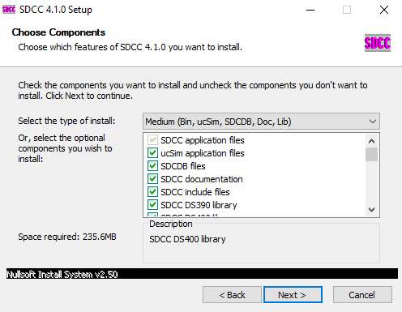
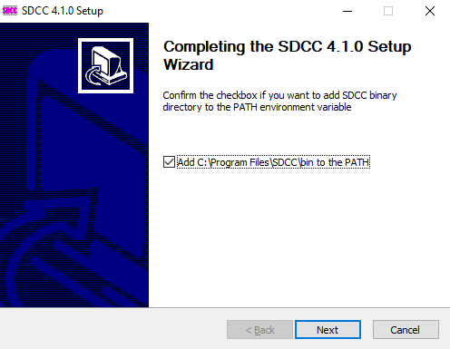
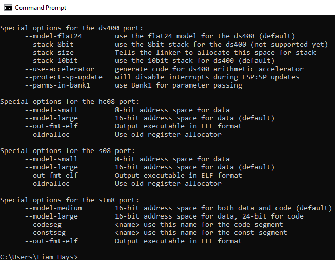

Welcome to my Game Gear programming tutorials! Eventually this will be a reasonably complete guide through programming the Game Gear (GG) in both C and Z80 assembly.
I explain the software and programming later, but you'll need a few prerequisite skills:
In Lesson 0 you'll set up the programming environment. You'll have to download a few things to get started.
The Small Device C Compiler (SDCC) is exactly what it sounds like: a C compiler for small, typically quite old, processors. The Game Gear is based around the Zilog Z80 processor, so we'll be using the Z80 output from SDCC. SDCC has very complex optimization support, because of the limited power of old chips, but it is almost completely C standards-compliant and has numerous useful features of its own. Download the binary for your operating system here and install it.
If you're on Windows and you're running the installer, choose the "Medium" installation type:
At the end of the installation, make sure "Add <install path\bin> to the PATH" box is checked: (if you're on another OS, make sure the binary directory is in the appropriate PATH variable)
Once SDCC is installed, test it: run "sdcc" in a terminal and you should get this output:
Get yourself a good text editor that you're comfortable and proficient with. I personally like Emacs, but if you don't already have a favorite, try a few and see what you like.
This should be a given, but it isn't always: don't use a WYSIWIG text editor like Microsoft Word. Get a real, authentic text editor like Visual Studio Code, Sublime Text, or something similar.
The last piece of software we need to install is devkitSMS, an SDCC library by sverx that provides numerous useful functions for programming the Master System and Game Gear.
Download the master.zip from the repository and extract it somewhere convenient. You'll have to access the files when you're compiling your source code, so place it in a directory near where you'll be keeping your source.
To run your code, you'll need either a real Game Gear with a flash cartridge or an emulator. There are many GG emulators available, but the one of choice for homebrew development is Emulicious. It is very accurate and stable, has many features to show what your program's doing.
Download it and unpack it to a convienent location.
SDCC should be working, devkitSMS should be somewhere accessible, and you should have a text editor up and running by now. Move forward onto Lesson 1 to actually start coding.